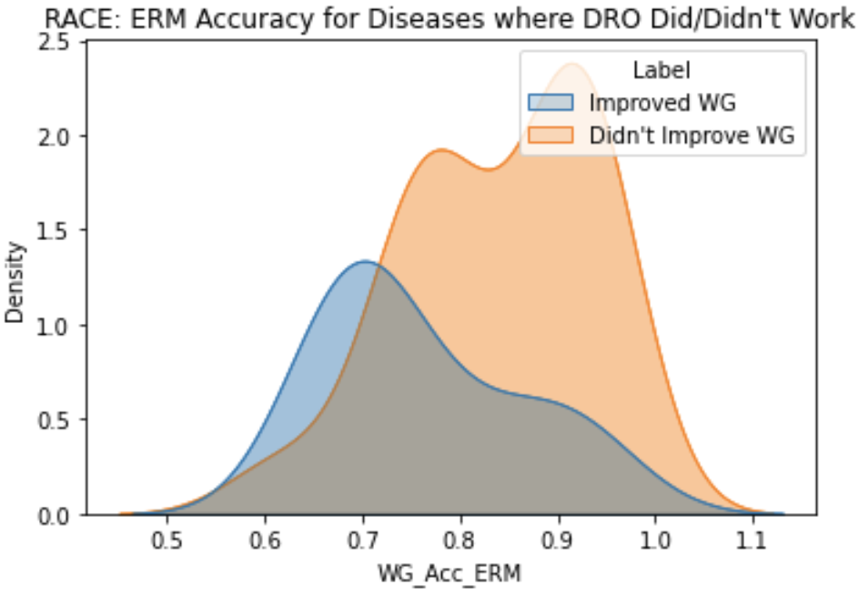
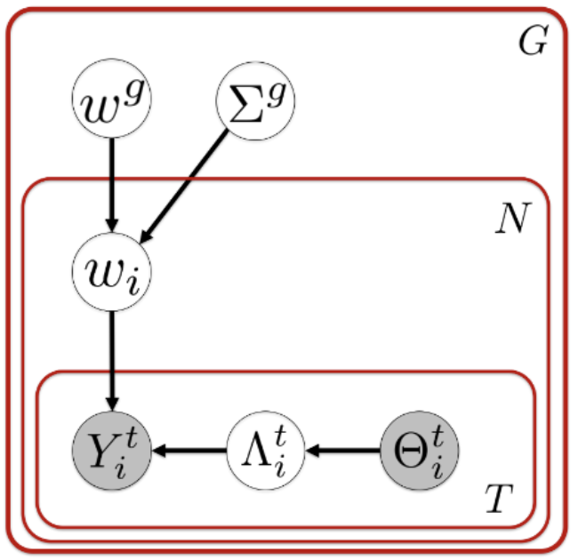
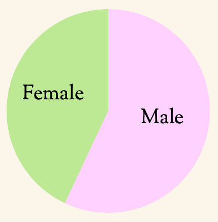

{kind=link}
About Me
I'm a first-year PhD student at MIT, advised by Phillip Isola. I am supported by a NSF Graduate Research Fellowship and an MIT HDTV Fellowship. I am broadly interested in generalization, generative models, and representation learning, particularly in computer vision. I have also worked in using insights from neuroscience and cognitive science to build better artificial intelligence systems.
Previously I got my bachelors in Computer Science and in Mathematics at MIT, working at the MIT Center for Brains, Minds, and Machines with Pawan Sinha and Xavier Boix. In the past I've also been fortunate to intern at Deepmind (large language models), D. E. Shaw (reinforcement learning research), Apple (applied machine learning), and Two Sigma (software engineering). In my free time I enjoy hiking, writing, and running.
Research
|
|
Shobhita Sundaram*, Darius Sinha*, Matthew Groth, Tomotake Sasaki, Xavier Boix To appear in Scientific Reports. ICLR Generalization Beyond the Training Distribution in Brains and Machines Workshop, 2021 |

|
Shobhita Sundaram*, Neha Hulkund* KDD Applied Data Science for Healthcare Workshop, 2021 |

|
Kimberly Villalobos*, Vilim Stih*, Amineh Ahmadinejad*, Shobhita Sundaram, Jamell Dozier, Andrew Francl, Frederico Azevedo, Tomotake Sasaki, Xavier Boix Neural Computation, 2021 |
Projects
|

|
Final project for 6.864: Natural Language Processing, 2021 |
|

|
Final project for 6.804: Computational Cognitive Science, 2020 |
|

|
Research conducted in the MIT Digital Humanities Lab, 2018 Read about our findings in Ms. Magazine |